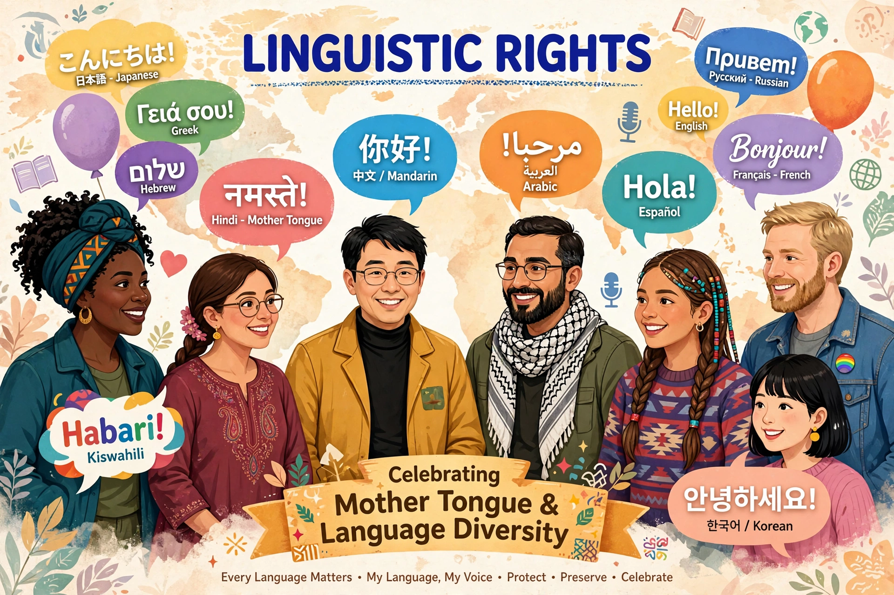

Human and civil rights concerning the choice of language for communication and education.
Linguistic rights are the human and civil rights concerning the individual and collective rights to choose the language or languages for communication in private and public spheres. They include the right to one's own language in legal, administrative and judicial acts, language education, and media.
International instruments addressing language rights include the UN's International Covenant on Civil and Political Rights (Article 27), the Convention on the Rights of the Child, and the Council of Europe's European Charter for Regional or Minority Languages (1992) and Framework Convention for the Protection of National Minorities. The Universal Declaration of Linguistic Rights was presented in Barcelona in 1996, though not formally adopted by UNESCO.
Scholars distinguish tolerance-oriented rights (private use) from promotion-oriented rights (public funding, schooling, official status). Debates involve endangered languages, immigrant languages, official-language policies, and linguicism — discrimination based on language. Linguist Tove Skutnabb-Kangas is a prominent advocate, linking mother-tongue education to broader human rights.